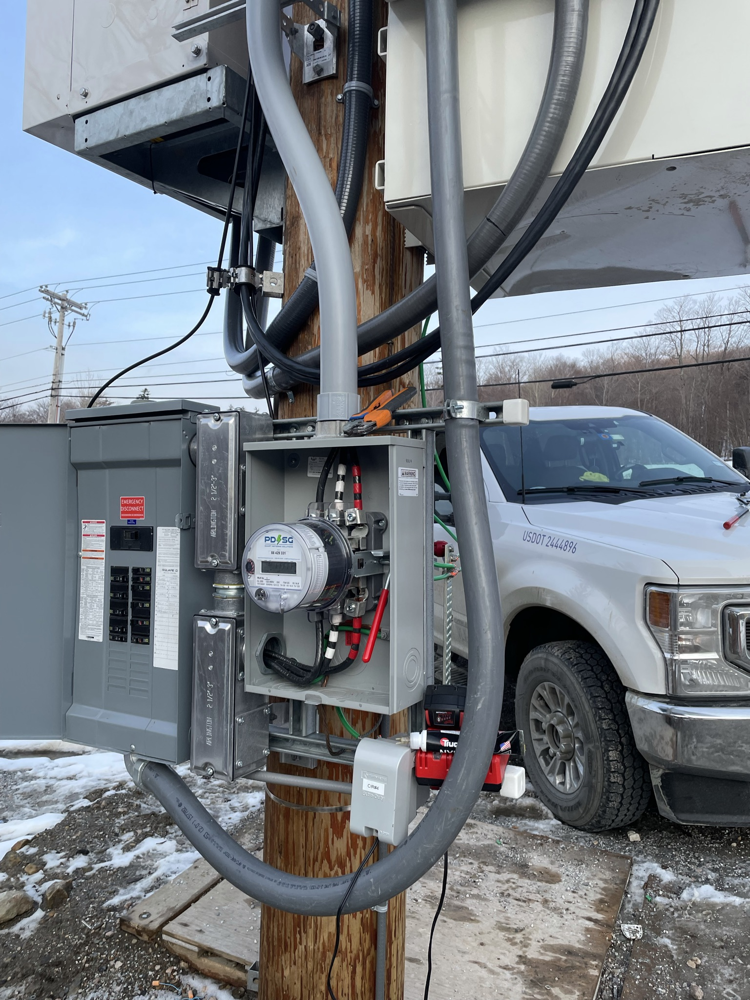

Tower technician / crew foreman
Cell-site work
from tower
to shelter.
I build cell sites in New England and lead a four-person crew. The work runs from antenna alignment and radio equipment on the tower to fiber, −48V DC power, cabinets, and conduit at the shelter.
Class A CDL history New England





Experience / Field and technical
Field work
across the site.
Construction, utility work, tower systems, and current AI and computing.
Construction
Residential construction, site construction, physical installation, structural assembly, hand and power tools.
Utility systems
Lineman school, lineman apprenticeship experience, electrical infrastructure, field utility work.
Structural steel
Tower structures, antenna mounts, platforms, structural installation and modifications.
Heavy rigging
Advanced rigging qualifications, large-crane lifts, load handling, rigging plans and hoisting equipment.
Work at height
Tower climbing, rope access, fall protection, climbing and rescue training, aerial lifts.
Electrical systems
Wiring, DC power cabling, electrical equipment, generator installations and associated infrastructure.
Environmental systems
Equipment shelters, cabinets, AC/cooling equipment, and some plumbing-related work.
Fiber optics
Fiber-optic cable installation, fiber transmission lines and underground fiber work.
Wireless RF
Cellular antennas, radio equipment, RRUs, TMAs, coaxial lines, PIM testing and RF troubleshooting.
Site integration
Interconnecting physical structures, power, cabling and telecommunications equipment on operating sites.
Field safety
Job hazard assessments, rescue planning, rigging plans, worksite inspections and safety procedures.
Equipment and logistics
Heavy construction equipment, trucks and trailers, lifting equipment, materials handling, Class A CDL history.
Leadership
Foreman and top-hand responsibilities, managing four-person crews, site execution, independent field decisions, closeout documentation.
AI and computing
Current work with GPUs, local model inference, open AI models, agent runtimes, workflow orchestration, software development and RCOS.